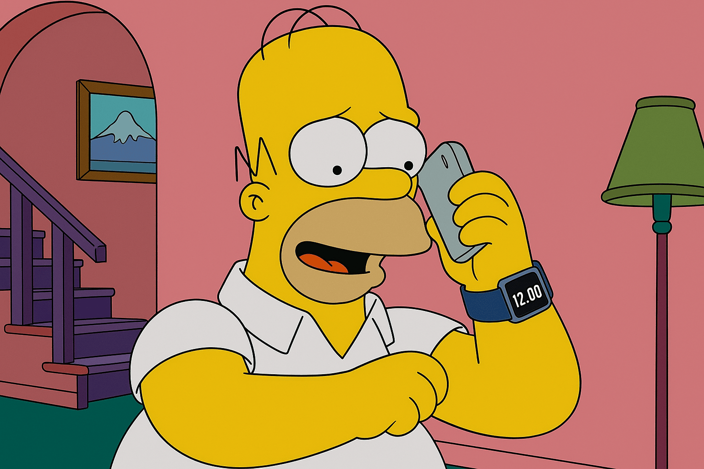

El smartwatch y los dispositivos inteligentes
Allá por 1995, Homero y compañía ya mostraban relojes inteligentes. Hoy en día, estos dispositivos son parte de nuestra vida diaria. ¿Coincidencia? ¡No lo creemos!
Allá por 1995, Homero y compañía ya mostraban relojes inteligentes. Hoy en día, estos dispositivos son parte de nuestra vida diaria. ¿Coincidencia? ¡No lo creemos!
En un capítulo, Homero arruina un final de fantasía al destruir un dragón... ¡y años después, el final de la serie fue sorprendentemente similar!
En un episodio, un virus procedente de Asia invade Springfield, adelantando lo que sería la crisis sanitaria mundial del COVID-19.
En un episodio del año 2000, Los Simpsons mostraron a Lisa asumiendo la presidencia tras un "desastre económico heredado de Trump". Años después, esto se volvió realidad cuando Trump llegó a la Casa Blanca.
“Iluminando Springfield... y a veces a los empleados.”
Visita la central nuclear de Springfield y gana 1 barra de uranio como souvenir
*No válido en días de inspección.en salchichas "Casi Fresh""
APU’S KWIK-E-MART
*Cualquier problema estomacal es solo coincidenciaLionel Hutz
Abogado
“¿Justicia? ¡Podemos intentarlo!”
Si no gana su caso, ¡es probable que usted esté en prisión de todos modos!
*No válido en tribunales reales.Hola, soy Troy McClure. Tal vez me recuerdes de otros cupones como este.
en cualquier espectáculo en el que actúe Troy McClure (si es que queda alguno).
*No incluye películas, programas de televisión o actuaciones en vivo.